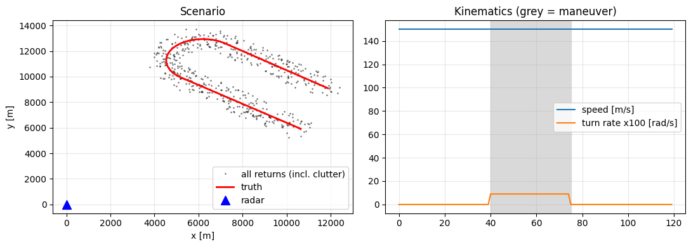
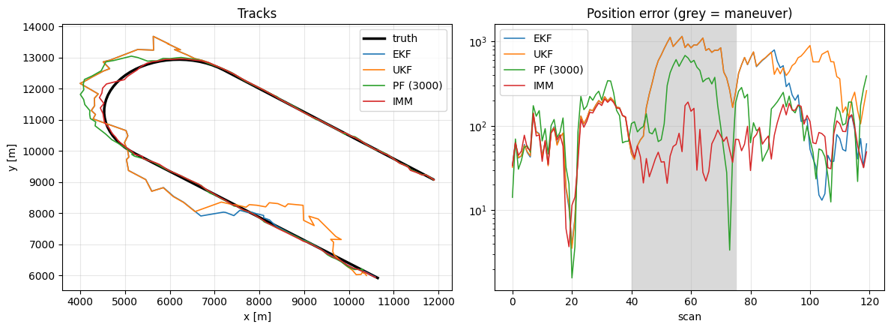
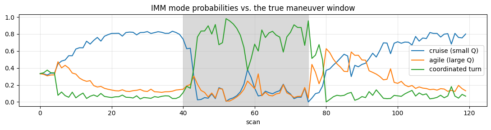
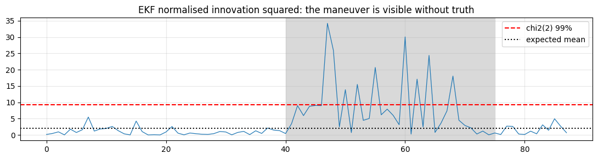
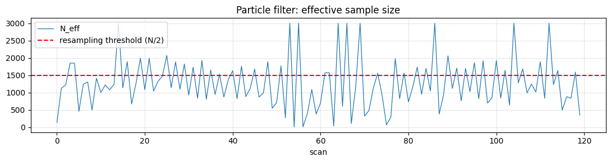

Walkthrough - Maneuvering Target with Clutter: EKF vs. UKF vs. PF vs. IMM#
One scenario, four filters. We will:
Simulate an aircraft that cruises, turns hard, then cruises again.
Observe it through a range-bearing radar (nonlinear) with missed detections and clutter.
Implement EKF, UKF, a bootstrap particle filter and an IMM from scratch.
Compare tracking quality against compute, and watch each one fail where its assumptions break.
Companion lessons: Chapter 2 L01, L02, L03, L04.
import time
import matplotlib.pyplot as plt
import numpy as np
from scipy.linalg import cholesky
RNG = np.random.default_rng(7)
plt.rcParams.update({"figure.figsize": (11, 4), "axes.grid": True, "grid.alpha": 0.3})
Part 1 - The scenario#
State \(x=(p_x, v_x, p_y, v_y)\). The target cruises straight, executes a coordinated turn at \(\omega = 0.09\) rad/s (a hard turn), then cruises again. The radar sits at the origin and reports
Bearing error of 1 degree at 20 km is a 350 m cross-range error: the uncertainty region is a banana, not an ellipse. That is what makes this nonlinear.
dt, T = 1.0, 120
TURN = (40, 75) # the maneuver window
omega_true = 0.09 # rad/s
sig_r, sig_th = 30.0, np.deg2rad(1.0)
P_D, LAMBDA = 0.9, 4 # detection probability, mean clutter returns per scan
def F_ct(w, dt):
"""Coordinated-turn transition for state (px, vx, py, vy); CV in the limit w -> 0."""
if abs(w) < 1e-6:
return np.array([[1, dt, 0, 0], [0, 1, 0, 0], [0, 0, 1, dt], [0, 0, 0, 1]])
s, c = np.sin(w * dt), np.cos(w * dt)
return np.array([[1, s / w, 0, -(1 - c) / w],
[0, c, 0, -s],
[0, (1 - c) / w, 1, s / w],
[0, s, 0, c]])
def Q_cv(dt, sa):
"""Discretised white-acceleration process noise."""
G = np.array([[dt ** 2 / 2, 0], [dt, 0], [0, dt ** 2 / 2], [0, dt]])
return sa ** 2 * G @ G.T
x = np.array([12000.0, -120.0, 9000.0, 90.0])
truth = np.zeros((T, 4))
for t in range(T):
w = omega_true if TURN[0] <= t < TURN[1] else 0.0
x = F_ct(w, dt) @ x
truth[t] = x
def h(p):
return np.array([np.hypot(p[0], p[2]), np.arctan2(p[2], p[0])])
# measurements: at most one true detection per scan (with prob P_D), plus Poisson clutter
scans = []
for t in range(T):
zs = []
if RNG.random() < P_D:
zs.append(h(truth[t]) + RNG.normal(0, [sig_r, sig_th]))
for _ in range(RNG.poisson(LAMBDA)): # clutter, uniform in the gate volume
zt = h(truth[t])
zs.append(zt + RNG.uniform([-800, -np.deg2rad(3)], [800, np.deg2rad(3)]))
scans.append(np.array(zs) if zs else np.empty((0, 2)))
polar2xy = lambda z: np.array([z[0] * np.cos(z[1]), z[0] * np.sin(z[1])])
clut = np.array([polar2xy(z) for s in scans for z in s])
fig, ax = plt.subplots(1, 2)
ax[0].plot(clut[:, 0], clut[:, 1], "k.", ms=2, alpha=0.4, label="all returns (incl. clutter)")
ax[0].plot(truth[:, 0], truth[:, 2], "r-", lw=2, label="truth")
ax[0].plot(0, 0, "b^", ms=10, label="radar")
ax[0].legend(); ax[0].set_title("Scenario"); ax[0].set_xlabel("x [m]"); ax[0].set_ylabel("y [m]")
ax[1].plot(np.hypot(truth[:, 1], truth[:, 3]), label="speed [m/s]")
ax[1].plot(np.r_[0, np.diff(np.unwrap(np.arctan2(truth[:, 3], truth[:, 1]))) / dt] * 100,
label="turn rate x100 [rad/s]")
ax[1].axvspan(*TURN, color="0.85"); ax[1].legend(); ax[1].set_title("Kinematics (grey = maneuver)")
plt.tight_layout()

Part 2 - Gating and association#
Every filter below needs one measurement per scan. We use the gated nearest neighbour of Chapter 2 Lesson 04: reject anything outside the \(\chi^2\) gate, then take the closest survivor in Mahalanobis distance. Note that the gate is computed from \(S\) — a badly tuned filter therefore produces association errors, not just estimation errors.
GATE = 9.21 # chi2, 2 dof, 99%
def gated_nn(zs, z_pred, S):
"""Return the gated nearest measurement, or None."""
if len(zs) == 0:
return None
Si = np.linalg.inv(S)
d = []
for z in zs:
y = z - z_pred
y[1] = (y[1] + np.pi) % (2 * np.pi) - np.pi # bearing residuals wrap!
d.append(y @ Si @ y)
i = int(np.argmin(d))
return zs[i] if d[i] < GATE else None
R = np.diag([sig_r ** 2, sig_th ** 2])
x0 = np.array([truth[0, 0], truth[0, 1], truth[0, 2], truth[0, 3]]) + RNG.normal(0, [200, 20, 200, 20])
P0 = np.diag([500 ** 2, 50 ** 2, 500 ** 2, 50 ** 2])
Part 3 - EKF#
Linearise \(h\) with its Jacobian. sa is the process-noise strength — the maneuver budget.
def H_jac(p):
px, py = p[0], p[2]
r2 = px ** 2 + py ** 2
r = np.sqrt(r2)
return np.array([[px / r, 0, py / r, 0], [-py / r2, 0, px / r2, 0]])
def run_ekf(sa=3.0):
F, Q = F_ct(0.0, dt), Q_cv(dt, sa)
xh, P = x0.copy(), P0.copy()
out, nis, miss = [], [], 0
for t in range(T):
xh, P = F @ xh, F @ P @ F.T + Q
Hj = H_jac(xh)
S = Hj @ P @ Hj.T + R
# coasting: after consecutive misses, widen the gate so the track can be re-acquired
z = gated_nn(scans[t], h(xh), S * (1 + miss) ** 2)
if z is None:
miss += 1
P = P * 1.5
else:
miss = 0
y = z - h(xh)
y[1] = (y[1] + np.pi) % (2 * np.pi) - np.pi
K = P @ Hj.T @ np.linalg.inv(S)
xh = xh + K @ y
IKH = np.eye(4) - K @ Hj
P = IKH @ P @ IKH.T + K @ R @ K.T # Joseph form
nis.append(y @ np.linalg.inv(S) @ y)
out.append(xh.copy())
return np.array(out), np.array(nis)
Part 4 - UKF#
No Jacobians: push \(2n+1\) sigma points through the true \(h\).
def sigma_points(xh, P, alpha=1e-3, beta=2.0, kappa=0.0):
n = len(xh)
lam = alpha ** 2 * (n + kappa) - n
A = cholesky((n + lam) * P, lower=True)
pts = np.vstack([xh, xh + A.T, xh - A.T])
wm = np.full(2 * n + 1, 1 / (2 * (n + lam)))
wc = wm.copy()
wm[0] = lam / (n + lam)
wc[0] = wm[0] + (1 - alpha ** 2 + beta)
return pts, wm, wc
def run_ukf(sa=3.0):
F, Q = F_ct(0.0, dt), Q_cv(dt, sa)
xh, P = x0.copy(), P0.copy()
out, miss = [], 0
for t in range(T):
xh, P = F @ xh, F @ P @ F.T + Q
pts, wm, wc = sigma_points(xh, P)
Z = np.array([h(p) for p in pts])
Z[:, 1] = np.unwrap(Z[:, 1])
zbar = wm @ Z
dz = Z - zbar
S = (wc * dz.T) @ dz + R
z = gated_nn(scans[t], zbar, S * (1 + miss) ** 2)
if z is None:
miss += 1
P = P * 1.5
else:
miss = 0
dx = pts - xh
Pxz = (wc * dx.T) @ dz
y = z - zbar
y[1] = (y[1] + np.pi) % (2 * np.pi) - np.pi
K = Pxz @ np.linalg.inv(S)
xh = xh + K @ y
P = P - K @ S @ K.T
out.append(xh.copy())
return np.array(out)
Part 5 - Bootstrap particle filter#
Propagate particles through the dynamics, weight by the measurement likelihood, resample when \(N_{\text{eff}}\) collapses. No Gaussian assumption anywhere.
One thing to notice in the defaults: the particle filter needs a much larger process noise
(sa=20 against the EKF’s 3). A Kalman update can drag its mean towards a measurement that no
part of its prior supported; a particle filter can only reweight the particles it already has. If
the true state leaves the cloud — which is exactly what a hard turn does — the filter is lost for
good. Wide proposal, plus roughening after resampling, is the price of that generality.
def run_pf(N=3000, sa=20.0, rough=0.1):
F = F_ct(0.0, dt)
Qc = Q_cv(dt, sa)
L = cholesky(Qc + 1e-9 * np.eye(4), lower=True)
part = x0 + RNG.multivariate_normal(np.zeros(4), P0, N)
w = np.full(N, 1 / N)
out, neff_hist, miss = [], [], 0
for t in range(T):
part = part @ F.T + RNG.normal(size=(N, 4)) @ L.T
# gate on the predicted mean, then weight by the measurement likelihood
xh = w @ part
Hj = H_jac(xh)
S = Hj @ np.cov(part.T, aweights=w) @ Hj.T + R
z = gated_nn(scans[t], h(xh), S * (1 + miss) ** 2)
miss = miss + 1 if z is None else 0
if z is not None:
Z = np.array([h(p) for p in part])
d = z - Z
d[:, 1] = (d[:, 1] + np.pi) % (2 * np.pi) - np.pi
w = w * np.exp(-0.5 * ((d / [sig_r, sig_th]) ** 2).sum(1))
w = w / w.sum() if w.sum() > 0 else np.full(N, 1 / N)
neff = 1 / (w ** 2).sum()
neff_hist.append(neff)
if neff < N / 2: # systematic resampling
pos = (RNG.random() + np.arange(N)) / N
idx = np.searchsorted(np.cumsum(w), pos)
part, w = part[idx], np.full(N, 1 / N)
# roughening: without it, resampling duplicates particles until the cloud cannot move
part = part + RNG.normal(size=(N, 4)) * (rough * part.std(0) + 1e-9)
out.append(w @ part)
return np.array(out), np.array(neff_hist)
Part 6 - IMM#
Three models — cruise (small \(Q\)), agile (large \(Q\)), and a left coordinated turn — mixed by a Markov chain with \(\pi_{ii}=0.94\). Each model is an EKF. The mode probabilities are a free maneuver detector.
MODELS = [(F_ct(0.0, dt), Q_cv(dt, 1.0)), # cruise
(F_ct(0.0, dt), Q_cv(dt, 12.0)), # agile / high process noise
(F_ct(omega_true, dt), Q_cv(dt, 3.0))] # coordinated turn
PI = np.full((3, 3), 0.03)
np.fill_diagonal(PI, 0.94)
def run_imm():
M = len(MODELS)
xs = [x0.copy() for _ in range(M)]
Ps = [P0.copy() for _ in range(M)]
mu = np.full(M, 1 / M)
out, mus, miss = [], [], 0
for t in range(T):
# 1. mixing
cbar = PI.T @ mu
mix = (PI * mu[:, None]) / cbar[None, :]
xm = [sum(mix[i, j] * xs[i] for i in range(M)) for j in range(M)]
Pm = [sum(mix[i, j] * (Ps[i] + np.outer(xs[i] - xm[j], xs[i] - xm[j])) for i in range(M))
for j in range(M)]
# 2. per-model EKF step
lik = np.zeros(M)
for j, (F, Q) in enumerate(MODELS):
xp, Pp = F @ xm[j], F @ Pm[j] @ F.T + Q
Hj = H_jac(xp)
S = Hj @ Pp @ Hj.T + R
z = gated_nn(scans[t], h(xp), S * (1 + miss) ** 2)
if z is not None:
y = z - h(xp)
y[1] = (y[1] + np.pi) % (2 * np.pi) - np.pi
K = Pp @ Hj.T @ np.linalg.inv(S)
xp = xp + K @ y
IKH = np.eye(4) - K @ Hj
Pp = IKH @ Pp @ IKH.T + K @ R @ K.T
lik[j] = np.exp(-0.5 * y @ np.linalg.inv(S) @ y) / np.sqrt(np.linalg.det(2 * np.pi * S))
else:
lik[j] = 1e-12
xs[j], Ps[j] = xp, Pp
miss = miss + 1 if lik.max() <= 1e-12 else 0
# 3. mode update
mu = cbar * lik
mu = mu / mu.sum()
out.append(sum(mu[j] * xs[j] for j in range(M)))
mus.append(mu.copy())
return np.array(out), np.array(mus)
Part 7 - Head to head#
Position RMSE overall, RMSE during the maneuver, and wall-clock time.
results = {}
for name, fn in [("EKF", run_ekf), ("UKF", run_ukf),
("PF (3000)", lambda: run_pf()[0]), ("IMM", lambda: run_imm()[0])]:
t0 = time.perf_counter()
est = fn()
est = est[0] if isinstance(est, tuple) else est
results[name] = (est, time.perf_counter() - t0)
err = lambda e: np.hypot(e[:, 0] - truth[:, 0], e[:, 2] - truth[:, 2])
print(f"{'filter':<12}{'RMSE all':>10}{'RMSE turn':>12}{'RMSE cruise':>13}{'seconds':>10}")
for k, (est, secs) in results.items():
e = err(est)
m = np.zeros(T, bool)
m[TURN[0]:TURN[1]] = True
print(f"{k:<12}{e.mean():>10.1f}{e[m].mean():>12.1f}{e[~m].mean():>13.1f}{secs:>10.2f}")
filter RMSE all RMSE turn RMSE cruise seconds
EKF 324.2 637.3 195.2 0.01
UKF 405.8 636.1 311.0 0.01
PF (3000) 173.4 276.6 130.9 0.68
IMM 85.0 62.7 94.2 0.02
fig, ax = plt.subplots(1, 2, figsize=(12, 4.5))
ax[0].plot(truth[:, 0], truth[:, 2], "k-", lw=2.5, label="truth")
for k, (est, _) in results.items():
ax[0].plot(est[:, 0], est[:, 2], lw=1.2, label=k)
ax[0].legend(); ax[0].set_title("Tracks"); ax[0].set_xlabel("x [m]"); ax[0].set_ylabel("y [m]")
for k, (est, _) in results.items():
ax[1].plot(err(est), lw=1.1, label=k)
ax[1].axvspan(*TURN, color="0.85")
ax[1].set_yscale("log"); ax[1].legend(); ax[1].set_title("Position error (grey = maneuver)")
ax[1].set_xlabel("scan")
plt.tight_layout()

Read the error plot, not the average. Every filter is fine in cruise; the ranking is decided entirely inside the grey band, and the CV-model filters (EKF/UKF) show the classic lag then overshoot signature of a process-noise budget that does not admit maneuvers.
Part 8 - The IMM mode probabilities are a maneuver detector#
imm_est, mus = run_imm()
plt.figure(figsize=(11, 3))
for j, lbl in enumerate(["cruise (small Q)", "agile (large Q)", "coordinated turn"]):
plt.plot(mus[:, j], label=lbl)
plt.axvspan(*TURN, color="0.85")
plt.legend(); plt.title("IMM mode probabilities vs. the true maneuver window"); plt.xlabel("scan")
plt.tight_layout()

Part 9 - Breaking things on purpose#
9a. Process noise: the single most important knob#
Sweep sa for the EKF. Small \(Q\) smooths cruise beautifully and loses the turn; large \(Q\) follows
the turn and chases clutter the rest of the time. The architecture choice matters less than
this scalar.
sas = [0.5, 1, 2, 4, 8, 16, 32]
rows = []
for sa in sas:
est, nis = run_ekf(sa)
e = err(est)
m = np.zeros(T, bool)
m[TURN[0]:TURN[1]] = True
rows.append((sa, e[~m].mean(), e[m].mean(), np.mean(nis)))
print(f"{'sigma_a':>8}{'RMSE cruise':>13}{'RMSE turn':>11}{'mean NIS':>10} (NIS should be ~2)")
for r in rows:
print(f"{r[0]:>8.1f}{r[1]:>13.1f}{r[2]:>11.1f}{r[3]:>10.2f}")
sigma_a RMSE cruise RMSE turn mean NIS (NIS should be ~2)
0.5 273.2 724.5 7.07
1.0 263.4 680.6 6.38
2.0 239.7 655.2 5.15
4.0 299.1 596.0 6.37
8.0 170.5 169.6 3.05
16.0 126.5 218.3 1.70
32.0 138.7 209.4 1.71
NIS is the diagnostic that tells you this without ground truth. With 2 dof the mean NIS should be about 2; well above that means your \(Q\) or \(R\) is optimistic — exactly the situation during an unmodelled maneuver. In a real deployment you have no truth column, but you always have NIS.
_, nis = run_ekf(3.0)
plt.figure(figsize=(11, 3))
plt.plot(nis, lw=0.9)
plt.axhline(9.21, ls="--", c="r", label="chi2(2) 99%")
plt.axhline(2, ls=":", c="k", label="expected mean")
plt.axvspan(*TURN, color="0.85")
plt.legend(); plt.title("EKF normalised innovation squared: the maneuver is visible without truth")
plt.tight_layout()

9b. Clutter density#
Raise \(\lambda\) and watch nearest-neighbour association pick the wrong return. This is not an estimation failure — it is an association failure, and no amount of filter sophistication fixes it.
def rerun_with_clutter(lam, seed=11):
global scans
rng = np.random.default_rng(seed)
saved = scans
scans = []
for t in range(T):
zs = []
if rng.random() < P_D:
zs.append(h(truth[t]) + rng.normal(0, [sig_r, sig_th]))
for _ in range(rng.poisson(lam)):
zs.append(h(truth[t]) + rng.uniform([-800, -np.deg2rad(3)], [800, np.deg2rad(3)]))
scans.append(np.array(zs) if zs else np.empty((0, 2)))
e_ekf, e_imm = err(run_ekf()[0]).mean(), err(run_imm()[0]).mean()
scans = saved
return e_ekf, e_imm
print(f"{'lambda':>8}{'EKF RMSE':>11}{'IMM RMSE':>11}")
for lam in [0, 2, 8, 20, 50]:
a, b = rerun_with_clutter(lam)
print(f"{lam:>8}{a:>11.1f}{b:>11.1f}")
lambda EKF RMSE IMM RMSE
0 133.9 76.5
2 262.5 104.4
8 455.9 238.0
20 633.5 531.5
50 752.5 661.9
9c. Particle degeneracy#
\(N_{\text{eff}}\) collapses whenever the likelihood is sharp relative to the prior — which is precisely when the measurement is informative. Resampling is what keeps the filter alive, and it is why particle count is a scenario-dependent choice, not a default.
_, neff = run_pf(N=3000)
plt.figure(figsize=(11, 3))
plt.plot(neff, lw=0.9, label="N_eff")
plt.axhline(1500, ls="--", c="r", label="resampling threshold (N/2)")
plt.legend(); plt.title("Particle filter: effective sample size"); plt.xlabel("scan")
plt.tight_layout()
for N in [100, 500, 1500, 6000]:
est, _ = run_pf(N=N)
print(f"N={N:>5} RMSE {err(est).mean():>7.1f}")
N= 100 RMSE 1588.5
N= 500 RMSE 1772.9
N= 1500 RMSE 991.6
N= 6000 RMSE 162.7

What to take away#
Observation |
Lesson |
|---|---|
UKF ≈ EKF here |
at this geometry the nonlinearity is mild across \(\pm3\sigma\) — sigma points buy nothing (Ch.2 L02’s decision gate, answered) |
The PF beats both, at 30x the compute |
generality is real, and it is not free |
The ranking is decided inside the maneuver |
evaluate conditionally, never on the average alone |
Sweeping \(\sigma_a\) moves error more than switching EKF→UKF→PF |
tune \(Q\) before you upgrade the algorithm |
IMM wins by representing the mode, not by being fancier |
the representation is the fix (lens 1) |
NIS flags the maneuver with no ground truth |
consistency diagnostics are how you find this in production (lens 2) |
Clutter hurts every filter equally |
association is a separate problem from filtering (Ch.2 L04) |
Exercises#
Add a bias to the radar’s range (say +150 m) and augment the state to estimate it. Does NIS recover to its expected value?
Replace gated-NN with a PDA update (weight all gated measurements by their association probabilities, and inflate \(P\) by the spread term). How much of the clutter degradation in 9b does it recover?
Make the noise non-Gaussian: 5% of returns are drawn from a distribution 10x wider. Which filter degrades least, and why? (This is the Chapter 2 challenge.)
Then attempt Challenge 01 - Sensor Fusion with Non-Gaussian Noise.